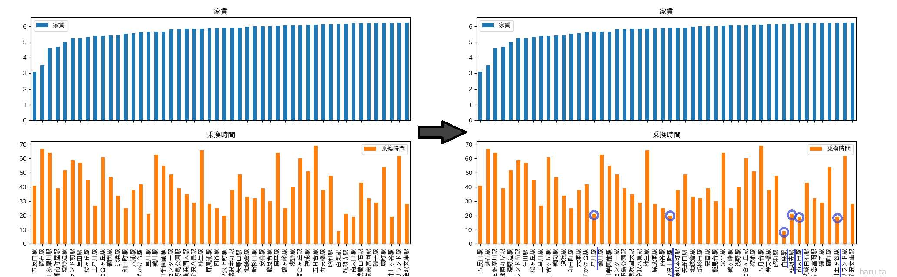
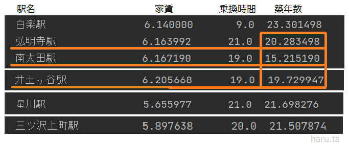

私は、駅別での住みやすさを調べてみました。重視する住みやすさとして、「家賃」「乗換時間」「築年数」を基準にしました。
こちらの青グラフは家賃が安い順に50駅ほどあげたグラフです。そして下のオレンジグラフは、各駅の平均乗換時間です。
ここから平均乗換時間が２０分程度の駅（右のグラフの青丸部分）を絞り込みます。

そうすると以下の６駅、
【星川駅・南太田駅・弘明寺駅・井土ヶ谷駅・白楽駅・三ッ沢上町】に絞られます。
ここから、さらにこれらの駅にある物件の平均築年数を調べたところ次のように出ました。

これらの中で築年数が短かった上３つ「弘明寺駅・南太田駅・井土ヶ谷駅」は、どれも南区にある京急線の駅名だったことから、私は横浜市南区のエリアをおすすめします。
＜補足＞
＜感想＞
かなり確実にエリアを絞っていくことができたように思う。
反省点はデータを絞って表示させるのが難しく、グラフ内の表示駅の数が多くなり見づらくなってしまった。
＜ソースコード＞
- import pandas as pd # データ分析に用いるライブラリ
- import matplotlib.pyplot as plt # グラフ表示に用いるライブラリ
- pd.set_option('display.unicode.east_asian_width', True) # 表示のずれを少し緩和
- plt.rcParams['font.family'] = 'IPAexGothic' # グラフ表示におけるフォントの指定
- # おすすめエリアの紹介
- # 説得力を持たせるデータを利用
- # 名称・カテゴリー・アドレス・アクセス・路線・駅・バス停・乗り換え時間・バス・徒歩・車・合計時間・築年数・構造・階数・家賃・管理費・敷金・礼金・間取り・面積
- # haru.ta物件データ分析
- data_path = "./data.csv"
- df_data = pd.read_csv(data_path, encoding="utf-8-sig")
- print(df_data.columns)
- print(df_data.groupby("駅").mean().loc[:, ["家賃", "合計時間"]])
- print(df_data.groupby("駅").mean().loc[:, ["家賃", "乗換時間"]].sort_values(by="家賃").iloc[0:50, :])
- print(df_data.groupby("駅").mean().loc[:, ["家賃", "乗換時間",]].sort_values(by="乗換時間").iloc[0:50, :])
- print(df_data.groupby("駅").mean().loc[:, ["家賃", "乗換時間","築年数"]].sort_values(by="家賃").iloc[0:50, :])
- df_mean = df_data.groupby("駅").mean().loc[:, ["家賃","乗換時間"]].sort_values(by="家賃").iloc[0:50, :]
- df_mean.plot.bar(legend=True,
- subplots=True,
- layout=(2,1),
- figsize=(10,8))
- plt.show()